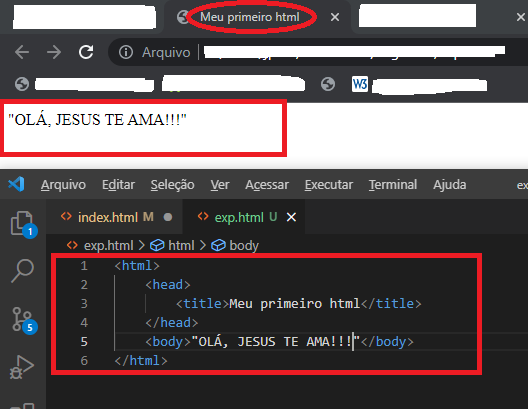
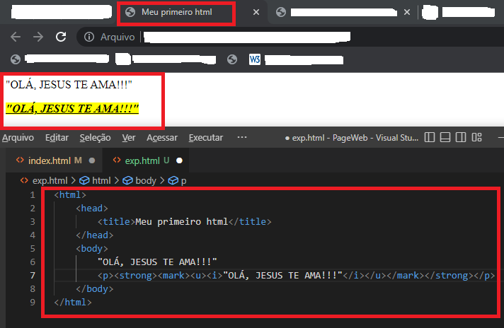

Ao contrário do que muitos pensam, não se trata de uma linguagem de programação, HTML na verdade é um arquivo de marcação
que delimita textos por nomes,
os quais cada um tem uma função e comportamento específico, em que o navegador consegue interpretar.
O termo HTML é uma abreviação do inglês HyperText Markup Language, traduzido tem o significado Linguagem de Marcação de Hipertexto.
" Eu amo JESUS!!! "
A estrutura básica consiste, primeiramente na abertura da tag "HTML" para que o editor de códigos compreenda que tudo o que estiver entre ela, será lido e interpretado
como uma "linguagem html". Em seguida, vem a tag "HEAD" identificada como cabeçalho, tudo o que estiver entre essa tag será carregado antes de
exibir todo o conteúdo para o usuário, tendo como exemplo a tag "title" que consiste em dar o título da pagina:
Por fim, a tag "BODY" que serve como o corpo e tudo o que for escrito entre ela será exibido para o usuário dessa maneira:
Já foi possível observar sobre quatro das principais tags que são: HTML, BODY, HEAD e a title. Contudo, ainda há outras para serem conhecidas, por exemplo:
Essa tag é simples de ser usada, ela basicamente serve para criar um paragráfo junto com todo o texto que estiver entre ela.
Essa tag basicamente transforma todo texto que estiver entre ela em itálico.
Essa tag serve para deixar todo o texto que estiver entre ela em negrito.
Essa tag serve para deixar o texto sublinhado
Essa tag serve para marcar todo o texto que estiver entre ela.
Ao juntar todas as TAGs em uma única frase obtem-se o seguinte resultado:
As listas ordenadas e não ordenadas são basicamente um sistema de listagem em que se utiliza a tag "ol" para as listas ordenadas e a tag "ul"" para as listas não ordenadas,
porém ambas necessitam da tag "li" entre elas. Apesar dessa semelhança, há uma pequena diferença entre elas.
As listas ordenadas organizam os itens de maneira sequencial utilizando números. Já as listas não ordenadas organizam os itens com marcações.